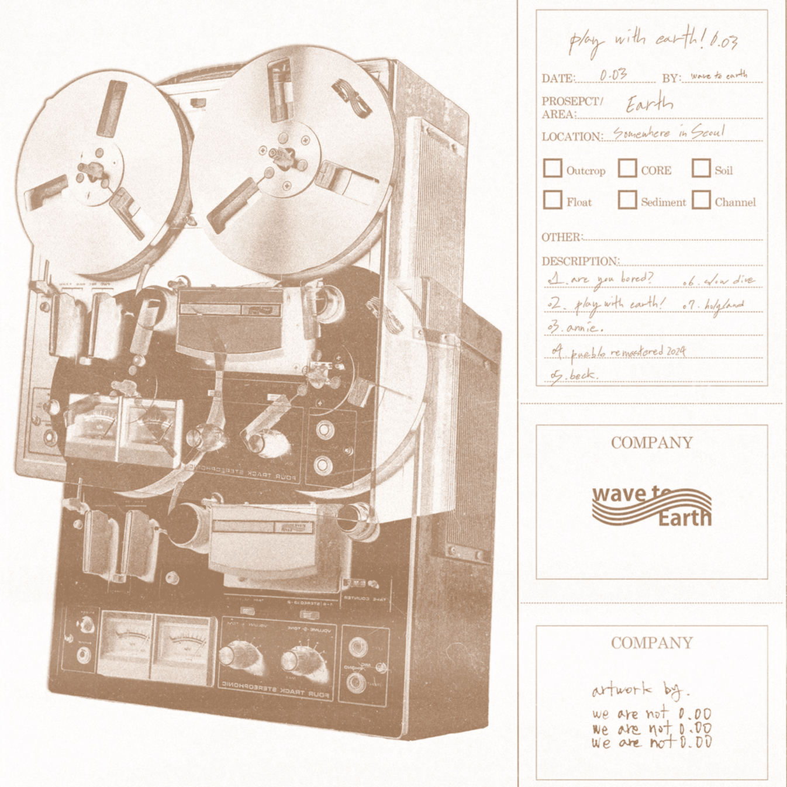

From left to right, Dongkyu Shin, Daniel Kim, Soonjong Cha
Wave to Earth is a Korean indie rock band consisting of three members: vocalist and guitarist Daniel Kim, bassist Soonjong (John) Cha, and drummer Dongkyu (Dong Q) Shin.
When the band came together in 2019, it was initially just Daniel Kim and Dong Q. Soonjong Cha would join them in 2020. This band create music centered around the themes of love and longing, drawing musical inspiration from jazz, indie rock, and lo-fi bedroom pop.
As of now (Sep 2024) they have 2 albums, 2 eps, and 8 singles.